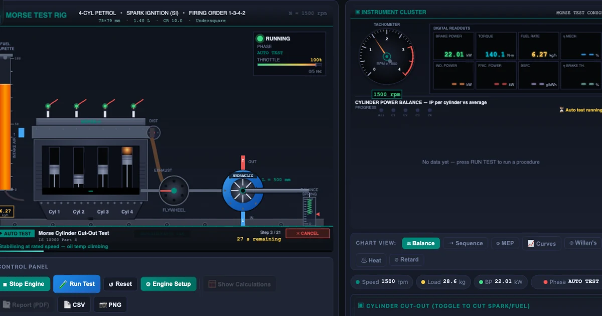
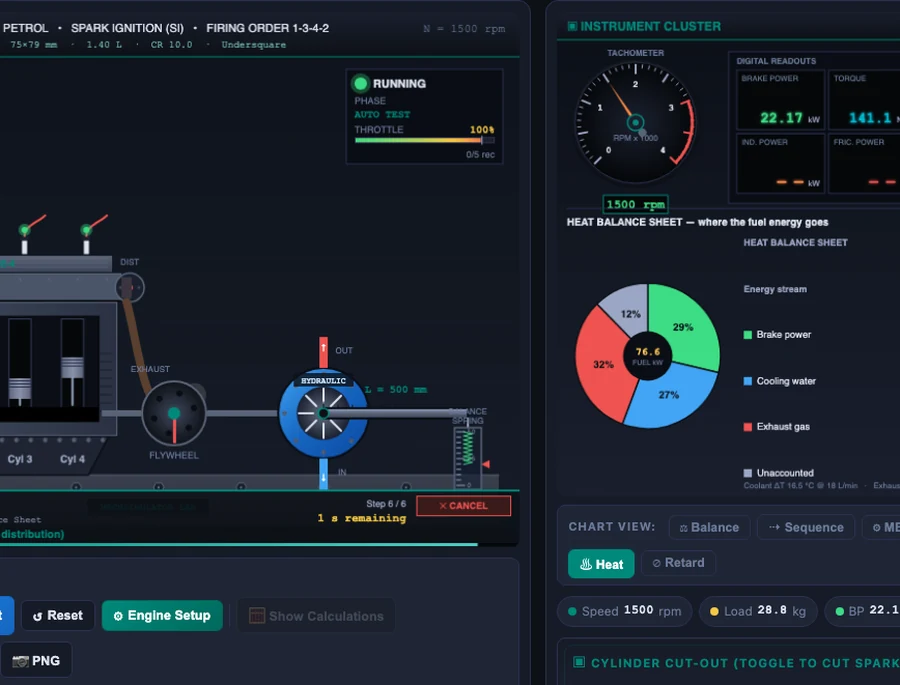

How I Teach IC Engine Tests with the Virtual Test Rig Simulator

- The Morse test cuts each cylinder of a multi-cylinder engine in turn; the brake-power drop when cylinder i is cut equals that cylinder's indicated power, so IPᵢ = BP_all − BP_cutᵢ.
- Summing every cylinder's indicated power gives total IP, and friction power follows as FP = IP − BP, with mechanical efficiency η_mech = BP / IP (the standard reference is IS 10000 Part 4).
- On the 4-cylinder petrol preset at 1500 rpm the rig reads IP = 24.0 kW, BP = 22.1 kW, FP = 1.9 kW and η_mech = 92%.
Getting students to understand IC engine testing properly has always been one of the harder parts of the curriculum for me. The theory isn't complicated — but without a real test rig in front of them, the Morse test procedure feels abstract, BSFC curves look like meaningless lines on paper, and Willan's line might as well be witchcraft. The IC Engine Test Rig Simulator changed how I run this module entirely. Six standard test procedures, seven chart views, a full heat balance sheet, and a one-click PDF report — all running in a browser, on any laptop, with no lab booking required.
Why Teaching Engine Tests Without a Rig Is So Difficult
Here's a scene I know too well. It's the third week of the engine testing unit. We've covered the theory: IP, BP, FP, mechanical efficiency. Students can recite the Morse formula. Then I ask someone to explain what actually happens to the engine when you cut a cylinder. Silence. Not because they haven't read the notes — they have. It's because they've never seen it happen.
Most vocational colleges have one test rig, shared across two or three cohorts. On a good semester it's operational. On a bad one, the dynamometer is awaiting a calibration part and the whole unit gets taught from a whiteboard. Even when the rig is working, you can realistically run two or three students through a procedure per session before time runs out. The rest watch from two rows back, waiting for a turn that may never come.
The other problem is standardisation. A real diesel rig gives you one engine, one load range, one speed, one set of presets. Students leave the lab having seen one data point. They haven't compared a petrol and a diesel. They haven't seen what happens to BSFC when you change compression ratio. They haven't plotted a full Willan's line. The simulator lets them do all of that in forty minutes.
Six Test Procedures on One Virtual Rig
The simulator ships with six automated test procedures and seven engine presets — three petrol configurations (2-cyl, 4-cyl, 6-cyl), three diesel configurations (3-cyl, 4-cyl, 6-cyl), and a 3-cylinder petrol — covering displacement from around 600 cc up to 5.8 L. Every engine's bore, stroke, and compression ratio are adjustable, so you're not locked into fixed presets.
The six procedures are:
- Morse cylinder cut-out (IS 10000 Part 4) — cuts each cylinder in sequence, measures the resulting BP drop to calculate per-cylinder indicated power and friction power.
- Variable-load sweep (IS 10000-8 / ISO 15550) — steps from no load to full load at constant speed, recording BP, torque, BSFC, and brake thermal efficiency at each point.
- Variable-speed sweep (SAE J1349 / ISO 1585) — holds the engine at full load while sweeping rpm, producing the torque and power curves students see on manufacturer spec sheets.
- Willan's line — plots fuel mass-flow rate against brake power at constant speed to determine friction power by extrapolation.
- Heat balance (IS 10001) — measures the energy distribution between useful brake work, cooling water, exhaust, and unaccounted losses at the current operating point.
- Retardation test — cuts the fuel supply and records the speed decay, deriving friction power from the deceleration rate and the calculated flywheel inertia.
Each procedure runs automatically. Hit Run Test, pick the procedure from the modal, and the simulator sweeps through every step while the chart updates in real time. When it finishes, you get a results table and a Report (PDF) button that generates a printable test report — the kind students submit for practical assessments.
The Morse Test: Finding What Each Cylinder Contributes
The Morse cylinder cut-out test is the procedure most engineering students are expected to know cold. It's also the one they most consistently get wrong in exams — not because the formula is hard, but because they don't have a mental model of what's actually happening.
The core idea is this: run the engine at a steady speed under full load. Record the brake power, \(BP_{\text{all}}\). Now cut cylinder 1 — interrupt its ignition without changing the load or the governor setting. The engine will slow slightly; the dynamometer compensates to restore speed. Read the new brake power, \(BP_{\text{cut}_1}\). The difference is the indicated power that cylinder was contributing:
\[IP_1 = BP_{\text{all}} - BP_{\text{cut}_1}\]
Repeat for every cylinder in sequence. Sum the individual indicated powers:
\[IP = \sum_{i=1}^{n} IP_i = \sum_{i=1}^{n} \left(BP_{\text{all}} - BP_{\text{cut}_i}\right)\]
Then friction power falls straight out:
\[FP = IP - BP_{\text{all}}\]
And mechanical efficiency follows immediately:
\[\eta_{\text{mech}} = \dfrac{BP_{\text{all}}}{IP}\]
On the default 4-cylinder petrol preset at 1 500 rpm, the simulator produces IP = 24.0 kW, FP = 1.9 kW, BP = 22.1 kW, and \(\eta_{\text{mech}}\) = 92%. Each cylinder contributes roughly 6 kW of indicated power. When you switch to the 4-cylinder diesel (d4 preset: 85 mm bore, 96 mm stroke, CR 17.5), IP climbs to 40 kW and the BSFC baseline drops to 220 g/kWh — a number students can compare directly against real engine datasheets.
What the simulator makes visible is the sequence chart: a bar graph that shows each cylinder's individual IP alongside the full-engine BP, side by side. I always switch to that view before running the Morse test so students can watch the bars form in real time as each cylinder is cut and restored. That visual — four bars growing one at a time — cements the procedure in a way that no diagram in a textbook ever has.
Reading the Heat Balance Sheet

The heat balance test is the one that genuinely surprises students every time. They know an engine isn't 100% efficient — but seeing that only about a third of the fuel energy reaches the crankshaft, and that as much goes straight out the exhaust pipe, is a different kind of knowing. It becomes visceral.
The underlying accounting is straightforward. At any operating point, the fuel energy input per second is:
\[\dot{Q}_{\text{fuel}} = \dot{m}_f \times CV\]
where \(\dot{m}_f\) is the fuel mass-flow rate in kg/s and \(CV\) is the calorific value (44 000 kJ/kg for petrol, 42 500 kJ/kg for diesel). Brake thermal efficiency is then:
\[BTE = \dfrac{BP}{\dot{Q}_{\text{fuel}}}\]
The simulator distributes the remaining fraction across cooling, exhaust, and unaccounted losses using realistic fractions derived from IS 10001 methodology — petrol engines allocate roughly 27% to coolant and 32% to exhaust, with the balance as unaccounted. Diesel engines run slightly leaner on cooling (24%) because their higher compression ratio extracts more work before the exhaust valve opens.
Switching between petrol and diesel presets while the heat balance tab is open makes for an excellent comparison exercise. Students can see how raising the compression ratio — and therefore the air-standard efficiency — shifts energy from the exhaust column toward brake power. It makes Otto vs Diesel cycle theory suddenly worth caring about.
How I Structure a 90-Minute Lab Session
Warm-up (10 min). I open the four-stroke engine simulator and run a quick cycle walkthrough — intake, compression, power, exhaust. Students who've already read the four-stroke engine cycle article already know the PV diagram shape; this jogs the memory before we move to measuring what that cycle produces.
Main activity (50 min). I divide the class into four groups. Each group gets a different engine preset and is assigned two test procedures: the Morse test and one of the following — variable-load sweep, Willan's line, or heat balance. They run both procedures, download the PDF report, and fill in a shared results sheet on the board. By the end of this block, we have a 4×2 matrix of results covering petrol and diesel, small and large displacement.
Cross-comparison (20 min). The real learning happens here. We look at the board together. Why does the diesel group's BSFC start at 210 g/kWh while the petrol group's is 285? What happens to the Willan's line intercept — the friction power — when you switch from a 2-cylinder to a 6-cylinder engine at the same displacement? These questions don't have pat answers; they require students to reason from the numbers they generated themselves.
Assessment (10 min). The simulator's Practice mode (under the mode tabs at the top of the tool) presents calculation exercises — given IP and BP values, find FP and \(\eta_{\text{mech}}\). The Quiz mode generates randomised questions. I use both for a fast end-of-session check. Students who've spent the previous fifty minutes running the actual tests almost always do better than those who've only seen the theory.
One practical note: the simulator compresses each stabilisation period to about two seconds per load step. Real engines need thirty seconds or more to reach thermal steady state. I always flag this, because students who go on to real rig work need to know why the procedure takes four hours instead of forty minutes. The virtual rig teaches the what and the why; the real rig teaches the patience.
Try It Yourself
All tools below are free — no account, no download.
Key Takeaways
- The Morse test formula \(IP_i = BP_{\text{all}} - BP_{\text{cut}_i}\) gives indicated power per cylinder; summing all gives total IP, and \(FP = IP - BP\) gives friction power directly.
- On the 4-cylinder petrol preset (75 mm bore, 79 mm stroke, CR 10), the rig produces IP = 24 kW, FP = 1.9 kW, and \(\eta_{\text{mech}}\) = 92% at 1 500 rpm.
- The heat balance test (IS 10001) shows that only ~30% of petrol fuel energy becomes brake power — roughly equal shares go to exhaust and cooling, with ~11% as unaccounted losses.
- Willan's line extrapolates fuel-flow vs brake-power to the x-axis; the intercept's absolute value equals friction power — a physical consequence of fuel being needed to overcome friction even at zero load.
- Diesel presets show lower BSFC (210–235 g/kWh vs 275–300 for petrol) and a slightly leaner cooling fraction — directly visible when you switch presets with the heat balance tab open.
- The Practice and Quiz modes turn the simulator into an assessment tool; students who've run the tests answer calculation questions faster and more accurately than those who've only studied the theory.
Frequently Asked Questions
What is the Morse cylinder cut-out test and what does it measure?
The Morse test is a procedure for multi-cylinder engines where cylinders are cut out one at a time by interrupting ignition. Each time a cylinder is cut, the brake power drops. The difference — BP_all minus BP_cut_i — equals the indicated power of that cylinder. Summing all cylinders gives total indicated power (IP), and IP minus brake power gives friction power (FP). The standard reference is IS 10000 Part 4.
What is BSFC and why does it matter in engine testing?
Brake-specific fuel consumption (BSFC) is the mass of fuel consumed per unit of brake power output per hour, expressed in g/kWh. It measures how efficiently an engine converts fuel energy into useful work. A lower BSFC means better fuel economy. In the variable-load test, BSFC is plotted against load — it typically peaks at idle (high friction fraction, low useful output) and reaches its minimum at 70–80% of full load, which is the most efficient operating point.
How does the Willan's line method determine friction power?
In the Willan's line method, fuel mass-flow rate is measured at several steady brake-power points. Plotting fuel flow against brake power gives a straight line. Extrapolating that line back to zero fuel flow produces a negative BP value on the x-axis — and the absolute value of that intercept is the friction power. It works because fuel must be burned even at zero brake output to overcome engine friction, so the line does not pass through the origin.
What is the difference between indicated power and brake power?
Indicated power (IP) is the total power developed inside the cylinders by combustion. Brake power (BP) is the power available at the crankshaft after subtracting mechanical losses — friction in bearings, pistons, and valve train. The difference is friction power: FP = IP − BP. Mechanical efficiency ηmech = BP/IP; the virtual rig's 4-cylinder petrol preset runs at about 92% mechanical efficiency at rated speed.
What test procedures does the IC Engine Test Rig Simulator follow?
The simulator bundles six automated test procedures: the Morse cylinder cut-out test (IS 10000 Part 4), a variable-load sweep (IS 10000-8 / ISO 15550), a variable-speed sweep (SAE J1349 / ISO 1585), the Willan's line method for friction power, a heat balance test (IS 10001), and a retardation test that derives friction power from the engine's speed decay after fuel cut-off. Results appear in seven chart views and can be exported as a PDF test report, CSV, or PNG.
Engine testing is one of those topics where the gap between understanding the procedure and actually internalising it is large — and it stays large until you've worked the numbers yourself, not just watched someone else do it. Six test procedures and seven engine presets won't replace a morning on a real dynamometer, but they give students a chance to arrive at the real rig having already made their mistakes somewhere cheaper.
Run all six procedures yourself at the IC Engine Test Rig Simulator — no account required, works on any device.